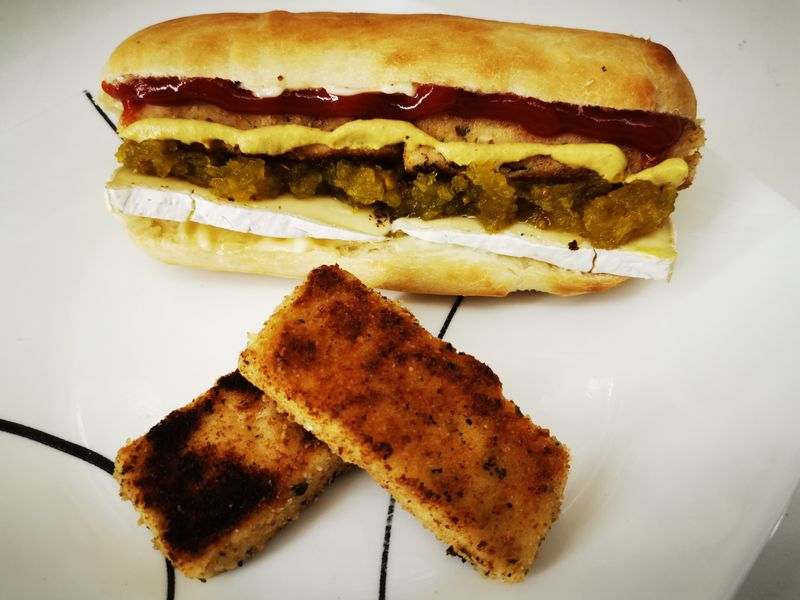

Hotdog au tofu panné
Préparation: —
Cuisson: —
Total: —
Ingrédients
-
450 g de tofu

-
2 c. à soupe de huile
-
1 œuf
-
chapelure assaisonnée à l'italienne
-
farine
-
sel et poivre
-
10 pains à hotdog
Instructions
Couper le tofu en 10 morceaux égaux sur la longueur.
Préparer trois bols : un avec de la farine, un avec l'œuf battu, un avec la chapelure assaisonnée. Assaisonner la farine de sel et poivre.
Passer chaque morceau de tofu successivement dans la farine, l'œuf, puis la chapelure.
Dans une poêle, faire chauffer l’huile et faire dorer les morceaux de tofu quelques minutes de chaque côté jusqu’à ce qu’ils soient croustillants.
Servir les morceaux de tofu dans les pains à hotdog avec les garnitures de votre choix.